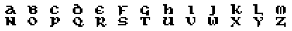
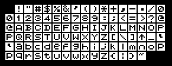
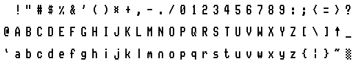

Copyright © 1987, 1999, 2000 Richard Brooksby. You may make and distribute verbatim copies of this document provided that you retain as they appear all copyright and licence notices. You may not charge a fee for this document or for distributing this document. You may not make or distribute derivative works (modified versions) of this document without the express written permission of the copyright holder.
The ROM version is supplied on a 16K ROM chip, and requires that it is fitted in a ROM board (see instructions with ROM board.) Once fitted, the ROM version is always available. If the message:
*** ADLAN ERROR: unsuitable environment ***
appears when you switch on, either ADLAN cannot find BASIC 1.0 or 1.1 in ROM slot zero (a rare occurrence), or another ROM is using the lower data area. The latter problem is solved by placing the ADLAN ROM in the highest slot on your ROM board. The former problem is solved by removing the ROM that is in slot zero, and putting it somewhere else on the board. The ROM version uses about 3K of memory, but leaves a great deal of room for adventures.
To compile MAXAM or PROTEXT text from memory, use the external command:
ADLANor use
ADLAN filenameto compile directly from an ASCII or PROTEXT file. (To enter external commands from MAXAM select X on the menu. From PROTEXT simply type them in command mode.) Compiling from a file will allow larger adventures, since more memory is available for the finished code.
If you are using a word processor or text editor other than PROTEXT or MAXAM, save the source code onto disc in ASCII form (see the manual for the editor) and then compile from BASIC using the command:
|ADLAN,"filename"(on the CPC664 or 6128) or
a$="filename":|ADLAN,@a$(on the CPC464).
The BASIC editor can be used to edit ADLAN programs, by writing the source code into quote-REM statements. Type in the source code like a BASIC program, putting a single quote (') before each line. The first line of the source code should contain two single quotes (''). For example
10 '' 20 ' (Example Program from BASIC) 30 ' 40 'OPTIONSetc...
To compile the program type
|ADLADLAN programs can be mixed with BASIC, provided the first line of the source is marked with the two quotes, and the rest of the source follows immediately afterwards.
If, during the file, a star (*) is encountered at the very beginning of a line, the rest of the line is taken as a file name. ADLAN then "opens" that file and compiles its contents as if it were part of the text at that point. This allows you to free memory by saving blocks of text on to disc. This is called file inclusion, and is only available to those using PROTEXT, MAXAM, or BASIC, and compiling from the text in memory. It cannot be used in a file because the AMSTRAD CPC operating system allows only one file to be open at once.
If a star is encountered at the beginning of a line in a file, the compilation is continued from the file with the name given, but the rest of the first file is ignored. This allows files to be linked together in a chain.
In order to compile files written using BASIC quote-REMs, save the files in ASCII format. For example, to save a whole program:
SAVE "filename",a
To save the code between lines 100 and 150:
OPENOUT "filename": LIST 100-150,#9 CLOSEOUT
BASIC files to be compiled using the star (*) option (see 1.3) should not contain the initial two single-quotes of the main program.
Several other useful external commands are built into the ADLAN ROM:
COMPRESS,<filename>,<buffer>ROMOFF,<list of:<rom nr>,>Some programs will not run while ROMs are installed, and this is particularly true of games, and of the ADLAN ROM. The ROMOFF command allows any background ROMs (including ADLAN) to be switched off, releasing the memory that they use. Stating a ROM number of zero will switch of the ADLAN ROM, which ever slot it is in. e.g.
|ROMOFF,1,4,2,0switches off ROMs 1,4,2 and ADLAN (ROM 7 is the disc ROM)
Unfortunately, this will not always cure the problem, since some programs stupidly turn all the ROMs back on again! In such cases try the RUN command (1.4.3), although sometimes the only solution is often to switch off, unplug your ROM board, and try again.
RUN,<filename>This command will sometimes cure the problems of programs clashing with ROMs. It will only operate with binary files, but it is usually these which cause a problem. If a program will not run with ADLAN installed, and the ROMOFF command does not help, try:
|RUN,"name of program"(on the CPC664 and 6128)
a$="name of program":|RUN,@a$(on the CPC464)
ADLAN.HELPThis command displays a series of "help screens" which show the syntax of all the ADLAN commands and expressions.
ADLAN.INFODisplays information about the ADLAN compiler.
UNICALInstalls the "unical hand" character set, provided the symbol table had been allocated. For example (from BASIC):
SYMBOL AFTER 97 |UNICAL

BLOCKEDInstalls the "blocked chars" character set on the italics, provided the symbol table is allocated. For example (from BASIC):
SYMBOL AFTER 160 |BLOCKED
Blocked chars are best used in mode 1. They can be difficult to read in mode 2, especially on colour monitors.

STYLITEInstalls the "stylite" character set, provided the symbol table is allocated. For example (from BASIC):
SYMBOL AFTER 33 |STYLITE
Stylite is an attractive "clean" character set, which can be read easily in all modes.

Before you start bashing away at your keyboard you need to know what you're going to write. You must know what is going to happen in the adventure, and what task the player has to perform. If you start without a plan you get a huge number of mistakes and errors, and your adventure will end up being messy and unatmospheric. To illustrate what needs to be done here is an example.
This will be a very small adventure in which the player must escape from a cave. Here is the map:
+-------------------------------+ N
|Exit <---- Top of grown plant| ^
+-------------------------------+ W--o--E
^ |
/ S
/UP/CLIMB PLANT
+-----start------+ +----------------+ +-----------+
|West end of room|----|East end of room|--rusty gate--|Alcove with|
| SMALL PLANT | | RUSTY GATE *1| (needs oil) | |
+----------------+ +----------------+ | water |
/DOWN /DOWN +-----------+
/ /
/UP /UP
+----------+ +----------+ *1 = Picture: RUSTGATE.CSC
| West pit | | East pit |
| BOTTLE | | oil |
+----------+ +----------+
The map follows a definite system. North, south, east and west links are all horizontal and vertical. Links of other kinds are diagonal and are labeled with the means of moving. One-way links are shown with arrows. Each location is in a box, and objects are all in capital letters, at the location where they start. Where the way is blocked by a rusty gate the puzzle and solution are written. Where there is to be a picture the filename of the picture is defined.
In this adventure the player must take the bottle, fill it with oil and oil the gate. He must then fill the bottle with water and water the plant. He can then climb the grown plant and escape.
There are three objects in the adventure, although the player can only move one of them. These are the bottle, the gate and the plant. The gate and plant are both put in as objects because they are things which will change in the adventure.
Pictures are only really practical to disc users, since the picture is loaded and de-compressed every time it is drawn on the screen. This allows very complex pictures to be included, without taking up any memory space. When writing an adventure for tape you should not use pictures, or at least be very careful with their order of appearance.
There is no need to do anything more to your adventure, unless you want to clarify puzzles further. It is, however, important to realise what will happen when puzzles are solved wrongly.
Now is the time to switch on the computer and start up your word processor or text editor. You should enter text with a carriage return at the end of each line (this usually means pressing [ENTER] or [RETURN] at the end of the line) except when you are typing strings. Strings are descriptions, messages and other text that ends up on the screen (for a full description of strings see chapter 9). These can be formatted by your word processor. If you are using a simple editor which cannot format (such as MAXAM, or BASIC) you must press [ENTER] or [RETURN] at the end of every line. BASIC, of course, also requires line numbers and quotes.
If you aren't using PROTEXT or MAXAM then your file must be saved in ASCII form before compiling. It must always be saved in ASCII form (see your word processor manual, this is often called "printing to a file"). PROTEXT users need not save their source code in ASCII form. The normal SAVE command is fine. MAXAM always saves in ASCII form.
You can type in either upper or lower case, they are the same thing to ADLAN (except in strings).
ADLAN uses brackets to denote a comment, like a REM in basic. Anything between the open bracket and close bracket is ignored. You can put comments anywhere where you could put a space, except in strings. Everything in a string is printed (see chapter 9). Also any line beginning with a greater that symbol (>) is ignored. This allows you to use PROTEXT stored commands (such as headers and footers) without upsetting the program.
ADLAN expects to see the information for the adventure in the following order:
OPTIONSThese are a few things that ADLAN needs to know before it goes any further. So far the example program looks like this.
(ADLAN EXAMPLE ADVENTURE)
OPTIONS
2; 0; <You can't go that way>; <^L>;
ENDOPTIONS
The first option is the screen mode in which the adventure will start. Mode 2 has 80 columns and is probably the mode in which your word processor works. However, mode 2 can be difficult to read on a colour monitor. If you use mode 1 you must restrict your strings to 40 columns per line.
The second option is the number of variables which you are going to use in the program. Variables are explained in chapter 5.
The third option is the string which will be printed whenever the player tries to go in a direction which he is not allowed to go in.
The final option is a string which is printed before every description. Here it is a control code which will clear the screen (see chapter 9). You could put a string such as <^LYou are > so that your descriptions might start <in a... This will save space in your descriptions, but does limit your grammar a bit. The string is printed immediately after executing the DESCRIPTION routine, if any exists (see chapter 6).
An extra option is also available for more advanced users who wish to include machine code routines in their adventures. eg.
OPTIONS
2; 0; <You can't go that way>; <^L>; 500;
ENDOPTIONS
This will reserve 500 bytes of empty space in the program where machine code routines can be loaded and run. The address of the buffer is displayed during compilation, and will be needed to write the code. See chapter 5, CALLMC and LOADMC for details of how to load and execute machine code.
Warning: The address of the buffer may be different every time the adventure is compiled.
MESSAGESNumbered messages are strings which are used over and over again. To save space they are only typed in once, and then used with the PRINT command (q.v.). Lettered messages are displayed after object names which have matching status letters. Numbered messages can be in the range $1 to $32767. Messages do not have to be in any particular order. However, when ADLAN is looking for a message it searches from top to bottom. To make the listing of objects faster it is best to put the status (lettered) messages first.
MESSAGES
S <, small, weak and feeble, murmuring "water... water...">;
T <towering above you, shouting "WATER! WATER!">;
C <, rusted closed>;
W <of water>;
O <of oil>;
$1 <Ok>;
$2 <I can't see any about>;
$3 <You don't have any>;
$4 <Nothing happens>;
ENDMESSAGES
WORDSThese are all the words (apart from the names of objects) which the adventure will understand. Alternative spellings of the same word are separated by a slash (/), and will be indistinguishable from each other. The first four words are special. They are the "direction" words, and will be used by the player to move around. When the PLACES are defined below, each direction word refers to a "link" to another location.
WORDS
north/n; south/s; east/e; west/w;
look/l; at; (look and look at)
examine;
inventory/i/carry;
take/get/grab/seize;
pick; (pick up)
up/u/climb;
drop/leave;
put; (put down)
down/d/descend;
fill;
oil/lubricate;
water/irrigate;
stop/quit;
ENDWORDS
When you are writing you adventure you shouldn't expect to know all the words that you will need in your program. The WORDS section grows as you go along. A copy of Roget's Thesaurus is useful for alternative spellings.
OBJECTSEach object is defined by the following information:
noun(s), status, attribute, name string, description string;
The nouns are defined just as the words were, eg: BOTTLE/FLASK etc. ADLAN needs to know how many of these you are going to use in advance of creating the objects, so each noun must have it's own "slot" reserved. Noun slots are reserved by placing the number in square brackets after the word OBJECTS. If you leave out this number, together with the brackets, ADLAN will reserve 20. Note that BOTTLE/FLASK uses two slots, even though they are alternative spellings of the same noun.
The status is a set of letters which tell you about the object. Eight status letters can be used in any one program, each letter being used as many times as you wish. The letters can be looked at later on, and changed. For example, here the letter W is used in our example to show that the bottle is full of water. If you look back at the messages you will see that one of them has the letter W, and is the message <of water>. Whenever an object with status letter W is displayed, it will have the message <of water> added. Thus "a bottle" can become "a bottle of water".
The attribute is a number between 0 and 65535 which can be used to mean anything you want. You might use it to show weight, for example. It is treated like a variable (q.v.) using the keyword ATTRIB (see chapter 5.) In our example adventure the attribute is not used.
The name is just that; the name of the object. You must always have an article descriptor before the name, eg: a bottle, some leaves etc.
Lastly comes the description of the object. This can be as long or short as you want. Note that the description below has been formatted by PROTEXT. Note also that the string has a double angle bracket (<) at the beginning. When an angle bracket occurs in a string (except for the one that marks the beginning of the string) the rest of the line is ignored, including the carriage return. This means that the description paragraph can be formatted by the word processor without it having an extra carriage return at the start.
(A programmers comment about the status letters:
Immovable, Small, Tall, Closed, full of Oil, full of Water)
OBJECTS
plant/hydrangea,IS,,<a plant>,<It looks like a hydrangea>;
bottle/flask/flagon,,,<a bottle >,<<
The bottle is small and made of brown glass. The stopper does not fit
properly.>;
gate,IC,,<an iron gate>,<<
The gate has some particularly fine scrollwork on it; alas, all rusted
and tarnished.>;
ENDOBJECTS
PLACESNext to appear in the program are the locations in which the game is played. ADLAN requires the following information about a location:
location code, links to other locations, objects here, [picture name,] description, LOCAL BEFORE routine, LOCAL AFTER routine;
A location code can be any letter, followed by any number from 0 to 255. If no number is used it is assumed to be zero. So location A is the same as location A0. It is best to reserve these "zero locations" for special purposes. Each location has it's own unique code.
The links to other locations correspond to the first four words that were defined. For example, the location below is linked EAST to location R2. If the link goes nowhere a dash (-) is used instead of a code.
The objects here are simply the nouns of those objects, separated by spaces. The objects will start the adventure at that location.
If there is to be a picture at the location, the word PICTURE is inserted here, followed by a string which contains the name of the picture file. This string must NOT CONTAIN SPACES. Pictures are only really practical to disc users, since the picture is loaded and de-compressed every time it is required. See below for an example of a picture in an adventure.
The description is a string like the description of an object (see chapter 9).
The LOCAL BEFORE routine is obeyed immediately before the BEFORE routine, but only when the player is at this location. Similarly the LOCAL AFTER routine is obeyed immediately before the AFTER routine, but only at this location. Routines and commands are dealt with in chapter 5.
The location where the player will start their adventure must be placed in square brackets after the PLACES keyword.
PLACES [r1]
r1,- - r2 -,plant,<<
You are at the west end of an oval room, carved from grey stone. A
shaft of light comes through a hole high in the ceiling. In the floor
of the room are two pits, one at this end, one at the other. In the
wall above you is a hole, large enough for a person, but too high to
reach.>,{},
{
if both typed down and not typed put
{
moveto p1 describe loop
}
if both status plant is T and both typed up and not typed pick
{
moveto x describe loop (Climbing the plant)
}
};
r2,- - - r1,gate, picture <rustgate.csc>, <<
You are at the east end of an oval room. In the east wall is an alcove
with a gate across it. There is a pit in the floor at this end of the
room.>,
{
if both describing and status gate is C
{
print <\The alcove is blocked by the gate.>
}
},{
if both typed down and not typed put
{
moveto p2 describe loop
}
};
p1,- - - -,bottle,<<
You are in a steep-sided pit under the west end of the oval room. Some
rough handholds have been cut to allow climbing out of the pit.>,{},
{
if both typed up and not typed pick
{
moveto r1 describe loop
}
};
p2,- - - -,,<<
You are in a deep pit under the east end of the oval room. Gravel
makes climbing difficult. There is a pool of oil on the ground in the
pit.>,{},
{
if both typed up and not typed pick
{
moveto r2 describe loop
}
};
a1,- - - r2,,<<
You are in the alcove behind the gate. A small stream of water
trickles from a crack in the wall.>,{},{};
x,----,,<<
Well done. You have completed an extremely unchallenging adventure!
Now write a better one.>,{ quit },{};
carry,----,,<>,{},{};
ENDPLACES
The other special location is called "here". This is simply the location where the player is.
That is the end of the data which the adventure will need. All that remains is to write the routines which handle it all!
We'll take a break from all that typing and stuff to look at how the adventure will understand what the player is trying to say.
The player is only allowed to type letters, and they will all be capitals. Once he has typed his command, a program called a "parser" looks at it and extracts the meaningful bits. For example, in our example adventure, if the player types:
PLEASE TAKE THE BOTTLE MY COMPUTER FRIEND
the parser will ignore all words it does not know, and will only see:
TAKE BOTTLE
Both words will be remembered and can later be checked using the TYPED command. These words are said to have been TYPED. The order in which the words were TYPED is not stored. The parser can remember sixteen such words in a command.
In addition, the BOTTLE is a noun of an object, so the parser also remembers it as an ITEM. The parser will remember eight ITEMs, and their order IS important. The first noun is called ITEM1, the second ITEM2 etc. It does not matter if there is more than one spelling of a noun per object, they are all converted into numbers anyway. All words separated by a slash (/) are given the same number. You don't have to worry about the numbers, they are dealt with automatically by ADLAN.
Since all words are remembered as being TYPED, they can be used as both nouns and verbs. If the OIL was a separate object in our adventure, there would be a noun called OIL, and a verb OIL. There is no need to put OIL in the WORDS section of the program, since it is already a noun. In such a case, the command:
OIL GATE
would result in ITEM1=OIL, ITEM2=GATE, as well as OIL being remembered as TYPED.
Checking whether a word has been typed is done using the TYPED command, for example:
if typed oil
{
...
Also, if special combinations of words are needed, the TYPED command can be used with square brackets. For example, you might want TAKE and PICK UP to mean the same thing, so to test for either use:
if typed [take/pick up]
{
...
As another example, the verb WEAR is applicable to clothes, but if you wanted a player to WEAR some EARPLUGS, the sentence "PUT EARPLUGS IN" might make more sense. To test for this use:
if typed [wear/put earplugs in]
{
...
This will not respond to the player trying to "PUT TROUSERS IN", even though it will respond to "WEAR TROUSERS".
With 16 words and 8 ITEMs to play with some complex sentences can be understood. Especially useful is the use of adverbs. These are defined in the WORDS section, and tested for using TYPED. For example:
STAB THE MAN QUICKLY WITH THE KNIFE
QUICKLY can be tested for, and a different action taken from just:
STAB MAN WITH KNIFE
Also useful, you can check for separable verbs. In our example adventure the command:
PICK THE BOTTLE UP
is recognised, but
PICK THE LOCK
can be distinguished and have a different meaning.
Very important Only the first four letters of any word are looked at, and care must be taken to avoid clashes. For example, TROUT and TROUSERS are the same word. If a clash occurs the word that was defined first will be seen by the parser.
If you have two objects with the same name the SWAP command can be used. For example, in our example adventure we might have had two objects for the plant. There could have been:
plant,,,<a small plant, murmuring "water... water">, ... xxxx,,,<a huge plant, roaring "WATER!! WATER!!">, ...
The second plant is given the noun XXXX. When the huge plant comes into play the commands:
move plant from r1 to limbo move xxxx from limbo to r1 swap plant and xxxx
are given. The first two are described in chapter 5. The third exchanges the numbers assigned to the nouns XXXX and PLANT. This means that from now on, PLANT means the huge plant, and XXXX means the small plant. If the SWAP command had not been used, ADLAN would still think that PLANT meant the small plant.
When there is more than one noun used with a verb, it may be useful to sort them into order. Variable #0 will contain the number of objects that the player typed. For example:
GIVE THE ELF THE GOLD
GIVE THE GOLD TO THE ELF
These might have the same meaning, but ITEM1 and ITEM2 are reversed in the second sentence. The SORT command will sort all the ITEMs into the order in which they were defined in the OBJECTS section. eg. If ELF was defined first, the command SORT 2 would make both sentences look like:
GIVE THE ELF THE GOLD
If the player did not enter two recognisable nouns the SORT command will place zeros at the beginning. So if the parser recognised:
GIVE ELF
and the command SORT 2 was given, the result would be that ITEM1=0, and ITEM2=ELF. In this way the SORT command can be used to work out whether the player typed two known objects.
This is the part of ADLAN which makes the adventure tick. The commands form a routines which are compiled into machine code to form the finished adventure. Each block of commands is enclosed in two braces ({ and }). The layout of the routines are not important as far as spaces and carriage returns are concerned, but if you follow the layout of the examples given here, you will find your routines easier to debug, and no less efficient in the final adventure.
Each routine is a list of "commands". Commands are words that tell ADLAN to do something at that point. Perhaps the most used is the PRINT command.
PRINT <Hello.>
displays the message "Hello." on the screen, but the command:
PRINT $1
displays message $1, which in our example adventure is "Ok"
PRINT $ATTRIB sword
would get the attribute of the sword, and display the message of that number. "ATTRIB sword" is an example of an "expression" (sometimes abbreviated to "exp".) An expression is a piece of program which has a number result. It is with expressions that we do sums and test facts.
Two special commands are IF and WHILE. The IF command tests an expression, and if it is true (non-zero) obeys the following block of commands. eg:
IF FIND paper AT carry
{
PRINT <You are carrying the paper.>
}
IF can also be used with ELSE. The block of commands after the ELSE is obeyed if the expression was false (zero). eg:
IF FIND paper AT carry
{
PRINT <You are carrying the paper.>
}
ELSE
{
PRINT <You are not carrying the paper.>
}
Of course, it is far more efficient to write:
PRINT <You are >
IF NOT FIND paper AT carry { PRINT <not > }
PRINT <carrying the paper.>
Variables are like pigeon-holes that can hold numbers. In ADLAN they are accessed using the hash (#) symbol, followed by the variable number. You decide how many variables you want to use in the OPTIONS section. In addition to these, there will always be a variable numbered #0. The parser puts the number of objects that the player typed into this variable just before it starts the AFTER routine.
A full list of commands and expressions follows.
DESCRIBEThis command forces the description of the players location to be printed before the next BEFORE routine is executed. From then on DESCRIBING (q.v.) is true.
DRAWDRAW is similar to DESCRIBE, except that it ensures that the picture for the players location is drawn before the next BEFORE routine. If there is no picture then DRAW is ignored.
MOVE object FROM location_1 TO location_2This command takes an object from location 1 and puts it at location 2. If the object cannot be found at location 1 the command is ignored. eg:
move rock from a1 to carryPRINT stringThis displays the string on the screen.
PRINT $expThis displays message number of the expression on the screen.
PRINTF filename_stringThis highly useful command (intended mainly for disc use) will print the contents of a file. The file should be in pure ASCII form. The filename string should contain the name of the file to print, without spaces, control codes, or italic markers. If an error occurs (eg disc missing) a message will be printed, but the adventure will not be terminated. If you intend to use this command with the tape, you should remind the player not to stop the tape. Also remember that the files can only then be printed in the order in which they were saved, and cannot practically be printed twice. eg:
printf <extratxt.s01>
PICTURE filename_stringThis command allows you to display pictures at any time during the adventure. It is only really available to disc users, for the same reason as PRINTF (q.v.). The filename string should contain the name of the file to print, without spaces, control codes, or italic markers. The filename specified is immediately de-compressed onto the screen, drawing the picture. If an error occurs (eg disc missing) a message is printed, but the adventure continues. eg:
picture <zombie.csc>
PICTURE KEYAfter this command the adventure will wait for a key immediately after displaying a picture, and will then restore the screen back to its pre-picture state (apart from windows). This is the normal state, ie unless PICTURE DESCRIBING is given, PICTURE KEY is assumed.
PICTURE DESCRIBINGAfter this command the adventure does not wait or restore the screen after displaying a picture. This allows you to define a description window below a picture. It is important to define windows in the DESCRIBING routine when using this option, so that the description appears in the right place. These windows may also be defined in the OPTION string, using control codes.
DONEThis command terminates the routine in which it is found. eg. if encountered in the LOCAL AFTER routine, it forces the AFTER routine to be started. It should be used instead of LOOP in the AFTER routine. DONE cannot be used in the LOCAL BEFORE routine.
LIST locationThis command lists all the objects at the location, using their defined names. It also adds on any status messages if the object has any. Each object is displayed on a new line.
MOVETO locationThis command moves the player to the location. It does not stop the routine like DONE, but from then on, HERE will be the same as the location specified.
IF test_exp { "true" block }
IF test_exp { "true" block } ELSE { "false" block }This important command allows testing of a fact, and then different actions depending on whether that fact is true. For example:
if count here
{ print <There are some objects here.> }
else
{ print <There are no objects here.> }
This could more efficiently be written:
print <There are >
if count here { print <some> } else { print <no> }
print < objects here.>
WHILE test_exp { block_repeated_if_true }This command allows commands to be repeated many times. For example, to move all the objects the player typed to limbo:
while #0
{ move item #0 from here to limbo
#0 = sub #0-1 }
DISPLAY expThis command displays the result of the expression. For example:
display #0displays the contents of variable 0.
EXAMINE objectThis command prints the description of the object.
QUITThis command stops the adventure completely and permanently. It is important that you put it somewhere, so that you can test your adventure and then get back to editing the program.
RESTARTThis command start the adventure again, right from the beginning.
CRThis command simply starts a new line on the screen. It is neater and more efficient than a PRINT <\>.
#exp = expThis allows numbers to be put into variables. For example:
#1 = add #0+4puts the contents of variable 0 added with 4, into variable 1. (Variable 0 usually holds the number of objects typed.)
More complex ways of using variables can be found. For example:
#sum #1+10 = item #1This is called "indirection" and can be used to implement arrays in ADLAN.
ATTRIB object = expThis allows the attribute of an object to be changed. For example, to add one to the attribute of the rock:
attrib rock = add attrib rock+1SPThis command simply prints a space. It is neater and more efficient than print < >.
MAKE object status_lettersThis command adds the letters to an objects status. If BERT was status H for example, and the command:
make bert PKAwas issued, BERT's status would then be HPKA. A letter that is added twice will only feature once in the status of an object.
UNMAKE object status_lettersThis command removes status letters from an objects status. If a rock was status HL, the command:
unmake rock LOwould result in the rock's status being just H. The letter O was not removed because it was not there to begin with.
KEYThis command simply waits for a key to be pressed. It does not accept keys that were typed before the command was reached, eg during printing.
LOOPThe pattern of the adventure is as follows:
The LOOP command causes the flow to go back to step 1 immediately.
LINK direction FROM location_1 TO location_2This command fills in one of the links from a location. For example, if a location was defined as:
A1, - - X23 -, ...and the command:
link north from A1 to B99was used, A1 would then be the same as:
A1, B99 - X23 -, ...
Location 2 can also be a dash, if no link is to be made. So if the command:
link east from A1 to -
was used, A1 would then be:
A1, B99 - - -, ...
If you define the direction verbs as other than north, south, east and west, you must use your verbs in the link command. For example:
link starboard from A1 to X23
SWAP object_1 AND object_2This command swaps the numbers assigned to the objects, so that their noun names are swapped. Their positions are not swapped.
SAVEThis command will save the game position on cassette or disc, and will also QUICKSAVE it (q.v.). The name of the file to be saved must be typed by the player first, but no message is printed before this. Therefore you should use the command is a way similar to this:
print <Type name for game position:> save
If an error occurs during saving, a message will be printed, but the adventure will continue.
LOADThis command loads a previously saved game position. The name is required as in the SAVE command, but again, no prompt is made. Use the command like this:
print <Name of saved position?> load
Like the SAVE command, the adventure is not terminated if an error occurs. The LOAD command will accept files created with the SAVE command in a different adventure, but the information will probably make the game unplayable. As a side effect, the position loaded is also QUICKSAVED (q.v.).
QUICKSAVEThis command works like save, but instead of saving the position on disc, it is stored in memory. It can then be reloaded with the QUICKLOAD command. The QUICKSAVE command required space in memory, and so will generate an error if there is not enough room. There is usually more room left over in a saved adventure than when ADLAN is still in memory.
QUICKLOADQUICKLOAD restores the game position to where it was when the last QUICKSAVE was used. If you are going to allow the player to use these commands, it is important to do a QUICKSAVE when your first start the adventure, so that a QUICKLOAD has something to get hold of if the player uses QUICKLOAD before he has QUICKSAVEd. For example:
WORDS
...
qsave; oops;
ENDWORDS
...
(At the start location)
S, - - - -, , <...>,
{
if not been here { quicksave }
},{}
...
if typed qsave { quicksave print <Ok.> done }
if typed oops { quickload describe done }
EXITS north_string south_string east_string west_string none_stringThis command will print the strings only if their link goes somewhere. (NB your adventure may not use north, south etc. The strings are in the same order as the verbs.) For example, if you were at a location:
X1, - p32 u84 -, ...
and these commands were issued:
print <Obvious exits> exits <, north> <, south> <, east> <, west> < none>
then the following would be displayed:
Obvious exits, south, east
If there are NO exits, the "none" string is printed. So for a location:
X1, - - - -, ...
the following is displayed:
Obvious exits none
If you are careful with your control codes you can make this read better. eg.
print <Obvious exits> exits <, north> <, south> <, east> <, west> <^MNo obvious exits.>
would overwrite the "Obvious exits" with "No obvious exits" if there were none.
INK ink_number colour
INK ink_number first_colour second_colour
BORDER colour
BORDER first_colour second_colourThis command sets the ink specified to a certain colour. Anything on the screen displayed using that ink will then be in the colour specified. Used in its second form, the command will make the ink flash alternately from the first colour to the second colour. In mode 2 only inks 0 and 1 are available. In mode 1 inks 0 through 3 are available. The BORDER command is the same as the ink command, but changes the colour of the border of the screen. The colours are as follows:
For example:
ink 1 pastelyellow ink 2 red orange ink add 1+#3 blue border red
PEN ink_number
PAPER ink_numberThe first of these commands sets the pen colour (ie that of any letters printed) to the ink number given (see above). The second sets the paper colour (ie the colour on which the letters are printed) to the ink number given. The same effect can be accomplished with control codes. For example:
pen 1 paper 0 print <Hello>
or
print <^O1^I0Hello>
WINDOW stream top_limit bottom_limit left_limit right_limitThe window command, used in conjunction with the STREAM command, or "escape" control code (see chapter 9) allows the screen to be divided into windows, each with its own text. A window is like a sub-screen. The limits are the first and last column and row which the window occupies on the screen. The first column is numbered 1, the first line is also numbered 1. For example, to define a window in mode 2 which covers the top-left quarter of the screen:
window 5 1 13 1 40
And to print the message "hello" in the window:
stream 5 print <hello>
or
print <^[5hello>
There are eight streams available, numbered zero to seven. They normally cover the whole screen.
CLEARThis command clears the window of the current stream. This is usually the whole screen unless a WINDOW command has been used.
LOCATE column rowThis command moves the cursor to the position given in the current window (the top-left hand corner of the window is column 1, row 1). For example:
locate 5 2 print <hello>
or
print <^_^E^Bhello>
FORMAT
FORMAT NOTAfter the FORMAT command is issued, all strings will be automatically formatted by ADLAN, i.e. any word which would otherwise wrap at the edge of the screen (and so be split into two parts) is placed on a new line. In order for this to work properly, the strings should contain only one space between words, and contain no carriage returns or new lines. The FORMAT NOT command cancels this effect. Formatting is most useful when used with windows, when hand-formatting, or formatting by a word processor can be more difficult. Hand-formatting or word processor formatting is to be recommended above automatic formatting, because the results are usually much neater.
CALL address
CALLMC offset_addressThe first command transfers control to the machine code routine at the address given. The second adds the offset address to the address of the machine code buffer reserved in the OPTIONS section of the adventure (see also LOADMC). If no such buffer has been reserved, the second command acts identically to the first. Both commands pass the following parameters to the routine:
The variables can be read or altered by the routine, and the buffer may be used for any purpose (though primarily it is supplied for use as a file buffer). The routine may corrupt all registers except F' and BC' (consult firmware manual for details).
LOADMC filenameThis command loads the binary file named into the machine code buffer reserved in the OPTIONS section of the adventure (see also CALLMC). An error is generated if the file is too long for the buffer, or if it not a binary file. The error will cause the adventure to be terminated. This command allows creation of machine code routines using an assembler (for example, MAXAM) which can then by called using the CALLMC command. These can perform special functions which ADLAN does not provide (for example, sound).
Expressions are like commands, but always have a result. You could imagine the results as being passed to the left.
EQUAL exp_1 = exp_2Gives a true result only if exp_1=exp_2. It can be used with objects, for example:
if equal item 1=plant
{ Print <What plant?> }
AT locationIf the player is currently at the location specified, the result is true. For example:
if at a1
{ Print <You are at location A1.> }
AREA locationThis gives a true result if the player is at a location which has the same letter in it's code as the location given. It is useful for giving help messages, and for semi-local routines, such as rocks falling on the players head only in caves. For example:
if area c (true if player is in one of c0...c255)
{ print <You are in area C> }
NOT expIf the expression has a true result, the result of NOT is false, otherwise it is true. For example:
if not equal #0=#1
{ Print <They are not equal.> }
FIND object AT location
FIND object AT loc1 / loc2...If the object is at the location (or any one of the locations, if a list is given), the result of FIND is true. For example:
if not find rock at here
{ Print <I can't see the rock here.> }
EITHER exp_1 OR exp_2If either exp 1 in true or exp 2 is true, the result of EITHER is true. For example:
if either typed up or typed climb
{ moveto d99 done }
BOTH exp_1 AND exp_2If both exp 1 and exp 2 have true results, the result of BOTH is true. For example:
if both equal item 1=rock and equal item 2=tree
{ ...
causes the same response to TAKE as to PICK UP. For this to work, TAKE, PICK and UP must be separate words, not alternative spellings of the same word.
TYPED wordIf the word was typed, the result is true.
TYPED [ word_group_1 / word_group_2 / ...etc ]If any of the word groups listed was typed, the result is true. A word group is a list of words, separated by spaces; or a single word.
ADD exp_1 + exp_2The result is the sum of exp 1 and exp 2.
SUB exp_1 - exp_2The result is that of the subtraction, exp 1 - exp 2.
ITEM expThis can be used in place of an object to indicate a typed object (see chapter 4). A number is automatically selected for each object when it is created, and is subsequently used by ADLAN to identify it. The programmer need never worry about object numbers, but it might be useful to know that they can be put in variables. eg. #4=rock move #4 from a2 to a4)
FIRSTAT location_codeLike ITEM this can be used wherever an object could be used. The result of FIRSTAT is the first object in the list of objects at the location. If there are no objects at the location, the result of FIRSTAT is zero. It can be used to move all objects in a location, for example:
while count here { move firstat here to carry }
COUNT locationThe result of COUNT is the number of objects at the location. For example:
if not count here
{ print <There's nothing here!> }
KEYThis waits for a key to be pressed (like the KEY command), and then has the ASCII code for the key for a result.The ASCII code is always converted into a capital letter. (See computer manual for ASCII codes.)
YESNOThis waits for either the "Y" or "N" key to be pressed. If N is pressed, the result is zero, otherwise it is one. For example:
print <Are you sure you want to quit? (Y/N)>
if yesno {quit}
DESCRIBINGIn a BEFORE routine, DESCRIBING is one if a description has just been printed, otherwise it is zero. In an AFTER routine, DESCRIBING is one if a DESCRIBE command has been met, otherwise it is zero.
#expThe result is the contents of variable whose number is the expression.
ATTRIB objectThe result is the value of the attribute of the object.
STATUS object IS status_lettersThe result is true if ANY of the status letters specified is in the list of letters for the object. For example:
if status sword is ABC
{ This block executed if the status contains A, B or C }
if both status sword is A and
both status sword is B and status sword is C
{ This will be done if the status contains A, B and C }
RANDOM expThe result is a random number between zero and the expression-1. For example:
#2=random 10
Puts a random number between zero and nine into variable #2.
GREATER exp_1 THAN exp_2If exp 1 is greater than exp 2 then result of GREATER is true.
BEEN locationIf the player has been at the location before, the result is one, otherwise it is zero. This is extremely useful for first-time descriptions and events, and for scoring. For example, to score:
BEFORE
{
if not been here { #1=#1+10 }
This gives 10 points in variable #1 for visiting a new location.
The "flow of control" in ADLAN follows this pattern:
The START routine is executed only once, at the start of the adventure. It is usually used for setting up inks, windows and for title-screens and instructions.
The DESCRIPTION code is executed just before printing the description of a location, and so is used mostly to set up windows when the PICTURE DESCRIBING option is being used. (see chapter 5)
The use of the BEFORE and AFTER routines, both LOCAL and global, must be carefully thought out. If you want a rock to fall on the player's head when he enters a certain location, you put the routine to do this in the LOCAL BEFORE routine for that location. For example:
P15, - - X23 B52, ,<A rocky cave.>,
{
if not been here
{
print <A rock falls on your head.>
}
},{};
However, if you want a rock to fall on the player's head at random intervals, wherever they are, you must write this into the BEFORE routine. For example:
BEFORE
{
if greater random 100 than 95
{
print <A rock falls on your head.>
}
...
Note that RANDOM 100 is used to give a 5% chance of a rock falling.
The consequences of actions by the player usually come in the AFTER routine. If you want to add extra directions, such as UP or DOWN, these could be put in the LOCAL AFTER routine. For example:
U40, - Z255 X23 J90, ,<Another rocky cave.>,{},
{
if typed up
{ moveto G1 describe loop }
};
Note that if you are using PICK UP in your game, you must check that the player did not type PICK to avoid confusion. The routine must then be:
U40, - Z255 X23 J90, ,<Another rocky cave.>,{},
{
if both typed up and not typed pick
{ moveto G1 describe loop }
};
Verbs that work everywhere should be put into the normal AFTER routine.
The START routine in our example is very short. It simply sets some ink colours and displays a message.
START
{
ink 0 blue
ink 1 brightwhite
print <^L
WELCOME TO THE EXAMPLE ADVENTURE
All that you have to do is escape from the cave!
Press any key to begin.>
key
}
The DESCRIPTION routine appears next. Our example adventure does not have a DESCRIPTION routine. Here is an example routine, however. It sets up a window for the description to be printed in.
DESCRIPTION
{
window 0 1 80 20 25
(NB this command will also switch to stream 0)
}
The BEFORE routine should also list out the objects at a location (if you wish it to do so) as well as possible directions to go in. The commands to do this should also check if a description has just been printed, otherwise the list of objects here would appear before every time the player entered a command. The print command at the end of the routine prints and inverse star on the screen. This is the player's prompt and tells them that the parser is waiting for a command. So, here is our BEFORE routine.
BEFORE
{
if describing
{
print <\\Obvious exits:>
exits < N> < S> < E> < W> < none>
cr
if count here
{
print <\You can also see:\>
list here
}
}
print <\^P^X*^X>
}
The final PRINT command displays an inverse star as a prompt to the player.
The AFTER routine is concerned mainly with interpreting the players commands, and dealing with the consequences. Notes are given to clarify certain points.
AFTER
{
if typed stop { quit }
(It's important that you use quit somewhere, so that you can get out of the adventure)
if typed [examine/look at]
{
if find item 1 at here/carry
{
examine item 1 done
}
print $2 done
}
(Note the use of FIND with more than one location listed, and also the use of the TYPED command with word groups to give LOOK AT a different meaning from LOOK.)
if typed look { describe done }
if typed inventory
{
if count carry
{
print <You are carrying:\>
list carry done
}
print <You aren't carrying anything.> done
}
if typed [take/pick up]
{
if find item 1 at carry
{
print <You've already got that.> done
}
if not find item 1 at here
{
print $2 done
}
if status item 1 is I
{
print <You can't take that.> done
}
move item 1 from here to carry
print $1 done
}
(Take and drop often end up being the largest routines, since so many things must be checked for. eg. wearable objects must be "unworn" before dropping)
if typed [ drop / put down ]
{
if not find item 1 at carry
{
print $3 done
}
move item 1 from carry to here
print $1 done
}
if typed fill
{
if not find item 1 at carry
{
print $3 done
}
if both not equal item 1=bottle and item 1
{
print <You can't fill that.> done
}
if at p2
{
unmake bottle W (empty out any water)
make bottle O (fill with oil)
print $1 done
}
if at a1
{
unmake bottle O (empty out oil)
make bottle W (fill with water)
print $1 done
}
print <I can't fill the bottle here.> done
}
if typed oil
{
if not find item 1 at here
{
print $2 done
}
if not both find bottle at carry and status bottle is O
{
print <You don't have a suitable lubricant.> done
}
if equal item 1 = gate
{
print <You oil the gate and can push it open a little.>
unmake bottle O (empty the bottle)
unmake gate C (open the gate)
link east from r2 to a1 (allow player to go through)
done
}
if equal item 1 = plant
{
print <"Yuch" says the plant, shaking the oil of it's leaves.>
unmake bottle O
done
}
print $4 done
}
if typed water
{
if not find item 1 at here
{
print $2 done
}
if not both find bottle at carry and status bottle is W
{
print <You don't have any water.> done
}
if equal item 1 = gate
{
print <The gate gets even more rusty!>
unmake bottle W (empty the bottle)
done
}
if equal item 1 = plant
{
print <<
The plant spurts into furious growth, climbing up and up until it
reaches the hole in the wall.>
unmake bottle W (empty the bottle)
unmake plant S
make plant T (make the plant tall)
done
}
print $4 done
}
print <I don't understand.>
}
("I don't understand" is the standard reply which will be printed if none of the routines above was activated.)
To create the graphics you will need to use some sort of graphic design program, such as AMSOFT's Screen Designer.The screens you create should be saved onto disc in binary form. ie The type of screen that can be displayed with the LOAD command in BASIC. The manual supplied with your graphics program should tell you how to do this. You should avoid random stippling (spray) effects if possible, since these increase the size of the compressed screen slightly. Regular patterns and shaded fills will compress perfectly well.
ADLAN uses screens in a special compressed format. This can reduce average screens to only 2K and very complex screens to 6K, allowing many pictures to be stored on one disc. To compress your screens to ADLAN format enter the following BASIC program:
100 file$="RUSTGATE.CSC" 'Filename for compressed screen 110 Insert the program to load the screen here. The simplest 120 form will be LOAD"screen". 200 REM Reserve space for a file buffer. 210 MEMORY &1FFF 220 REM Wait for keypress while destination disc is inserted 230 WHILE INKEY$="": WEND 240 REM Compress the screen onto the disc. 250 |COMPRESS,@file$,&2000 260 MODE 2 270 END
Replace the filename in line 100 of the program with the filename that you require. The extension .CSC (for Compressed SCreen) is recommended on compressed screen files. The compressing process also stores all colours, mode and flash speeds which are set up by the program at lines 110 onwards.
This program is to be found on the ADLAN disc, under the filename COMPRESS.BAS. A program for converting Rainbird's Advanced Art Studio screens is also supplied, under the name CONVERT.BAS.
The graphics are included into the adventure in two ways. They can be associated with a particular location, or displayed by a command. When a screen goes with a location, the filename of the screen is included in the PLACES section of the program, thus:
U40, - Z2 X1 J0,, PICTURE <rustgate.csc>,
<Another rocky cave.>,
{},{};
The picture will be displayed if either the player has not been to the location before, or if the DRAW command is used (see chapter 5).
Pictures can be displayed at any time by using the PICTURE command. For example:
if typed [eat beans]
{
print <You eat the hallucinogenic beans... (Press a key)>
key
picture <halucina.csc>
done
}
ADLAN is designed so that you may use special character sets in your adventure. If you want to use special lettering there are two ways you can do it.
The first is to redefine the normal characters. The characters will remain in memory, and will be saved with the adventure when the S option is used at the end of a compilation. When the adventure is run the characters will be re-loaded.
The second method is more complex. You can have two sets of lettering in memory at once. The first is defined over the normal lettering (or not defined at all). The second is places on the characters which are numbered above 128. The ASCII code for the letter "A" is 65. To use the second character set, redefine the character 65+128 to the alternative form of the letter "A". This is called the italic form, although it could be a special rune, or something. The italic form will be used whenever a tilde (~) is met in a string. After the tilde, italics are used until another tilde is met. (PROTEXT users may use the printer control code for italics, [CTRL-X][I], instead. This will not muck up the formatting.) For example, the command:
PRINT <The scroll says ~Hi. I'm a scroll~ on it.>
might display:
The scroll says Hi. I'm a scroll on it.
Note that whenever a string starts, it starts in normal characters. If you forget to turn italics off in a string, they will automatically be turned off at the end.
This allows the use of occasional special lettering, or special symbols. For full details of how to create symbols see the Amstrad computer manual. If you have a symbol generator program, all the better.
Some example symbol files are supplied with your disc or tape. See chapter 11 for details.
Strings form the backbone of any adventure, and ADLAN has special facilities for dealing with them. All strings in ADLAN are compressed. In addition, any control code can be used in a string by using the form ^letter. The upward arrow (^) indicates a control code, the letter defines which. On the Amstrad CPCs the codes run as follows:
^A^A^L would display a christmas tree. See the Amstrad manual for details of these symbols.^B^C^D^D1 sets mode 1. ^D2 sets mode 2.^E^F^U.^G^H^I^J^K^L^M^N^N0 sets paper 0, ^N1 sets one etc... up to 3 in mode 1. ^N0 and ^N1 only are available in mode 2.^O^N command.^P^Q^R^S^T^U^F is met.^V^V1 command, only the foreground of a character is printed, so that many characters can be over striked to form another character. If you change the pen ink while doing this you could achieve multicoloured characters in mode 1. ^V0 Stops this option.^W^X^Y^ZWINDOW command.^[ print <^[1Hello^[0Goodbye> sends Hello to window 1, and Goodbye to window 0.^\^\0@@ sets ink 0 to black, ^\2CZ sets ink 2 to flashing red and white. The colours are also listed in the Amstrad manual. @ corresponds to colour zero, A to 1, B to two, etc... up to Z for 26.^]^\. Eg. ^]@@ sets border to black.^^^_Any characters between tilde (~) characters will have 128 added to their ASCII codes. This allows alternate character sets (see chapter 7).
Also available is the PRINTF command, which will print the contents of a file. This has only limited application in a cassette based adventure, but is useful for saving space on long descriptions in a disc adventure. For details see PRINTF in chapter 5.
Windows and colour can be very effective when used in an adventure. ADLAN provides facilities for both. The file WFRAME on the ADLAN disc is an example of windowing techniques.
Colour is effective for separating descriptions from objects, commands from responses and messages etc. Don't forget that the colours you choose on a colour monitor may not be visible on a green-screen. If this is so, give the player a command to switch to more visible colours.
Printing with colour is very simple. In mode 2 there are only two "inks" available, but each can be set to any of the available colours (see chapter 5). In mode 1 there are four inks. To print a string using the inks use the ^O control code. This changes the "pen" to the ink given. For example:
print <^O1Hello ^O2Goodbye>
would display "Hello" in ink 1, and "Goodbye" in ink 2. The ^O code only changes the ink in which the letters are printed. To change the ink that the letters are printed on use ^N. This changes the "paper" to the ink given. For example:
print <^O1^N2ABC>
would display "ABC" in ink 1 on ink 2. So if ink 1 was red, and ink 2 was blue, "ABC" would appear in red on blue.
The complexity of windows may vary, from a simple split screen for descriptions and commands, to a complete message overlay system. You can define a window at any time, and re-define it later to another place on the screen if you wish. To display text in the window the ^[ control code is used. For example:
window 1 1 40 1 10 ... print <^[1This text goes to window one.>
Each window has its own paper and pen. So if you use the ^O or ^N control codes in a window they will only effect the colours in that window. The INK command always effects the whole screen.
If you intend to use both graphics and windows in your adventure, then you must redefine the windows in the DESCRIPTION code, and re-display their contents IN THE BEFORE CODE. This is because any pictures will destroy whatever is on the screen at the time they are displayed. So, if you have a window which displays the players inventory, the window must be re-printed in the BEFORE code.
There are two types of error in ADLAN. The first sort is that which occurs while the program is being compiled (compile time errors). The other is the type that occur while the finished adventure is running (runtime errors).
AT, THEN, TO etc) is missing or misspelt.OBJECTS keyword. Increase this number.OBJECTS section, has already been moved to a location in the PLACES section.TYPED command, or the LINK command, is not one that was declared in the WORDS section.PLACES.^A to ^Z, ^a to ^z (same as capitals), ^[, ^^, ^\, ^], ^_.LINK command must be one of the first four declared.PLACES section.Also supplied with ADLAN is a "framework" file. This contains a simple outline for an adventure. The file is called "FRAME.ADL", and is in pure ASCII. It does not have any status letters implemented, but just has the simple standard verbs normally found in adventures.
FRAME.ADLFRAME.PDLFRAME.BDLWFRAME.ADLWFRAME.PDLWFRAME.BDLEXAMPLE.ADLBARTREK.BINCOMPRESS.BASCONVERT.BAS| 2.5 | 1988-10-29 | RB | This is the last modification date documented in original PROTEXT files for the manual. I don't know if this is before or after the last release. |
| 2.6 | 1999-09-17 | RB | Converted to HTML from PROTEXT files on disk images helpfully converted from old three inch disks by Martyn Lycett. Corrected a few spelling mistakes and changes a little of the punctuation and layout to make it more suitable for HTML, but otherwise left things pretty much as they were. |
| 2.7 | 1999-10-18 | RB | Prepared for web publication by adding document history, copyright, and licence information. |
| 2.8 | 2000-03-20 | RB | Converted to XHTML 1.0 format. |